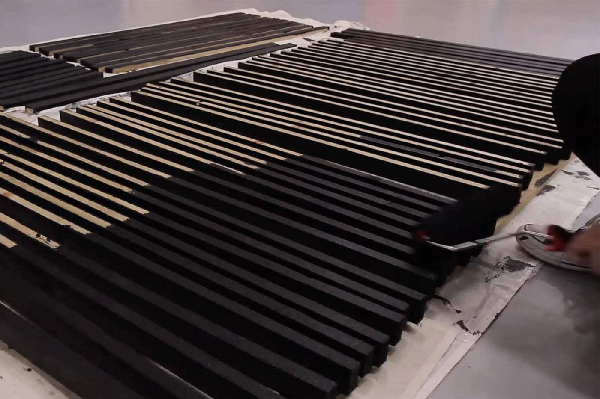
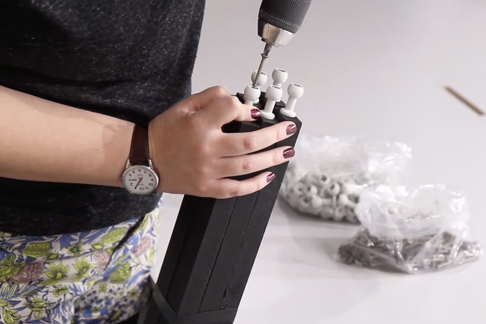
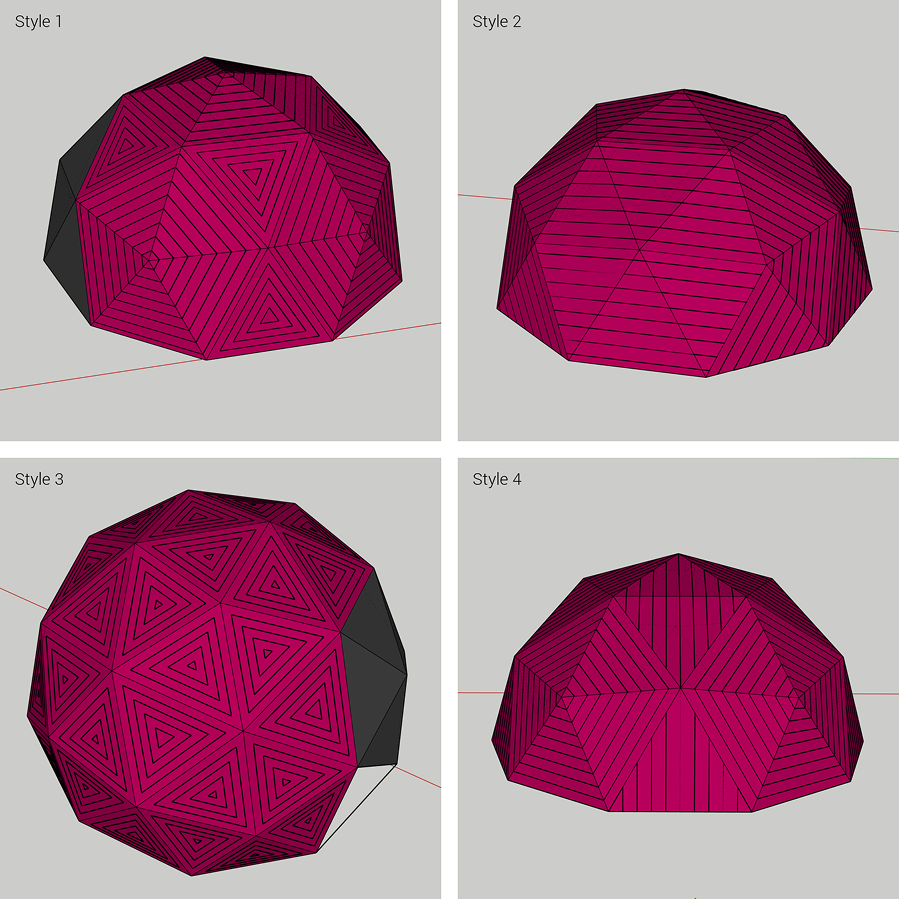
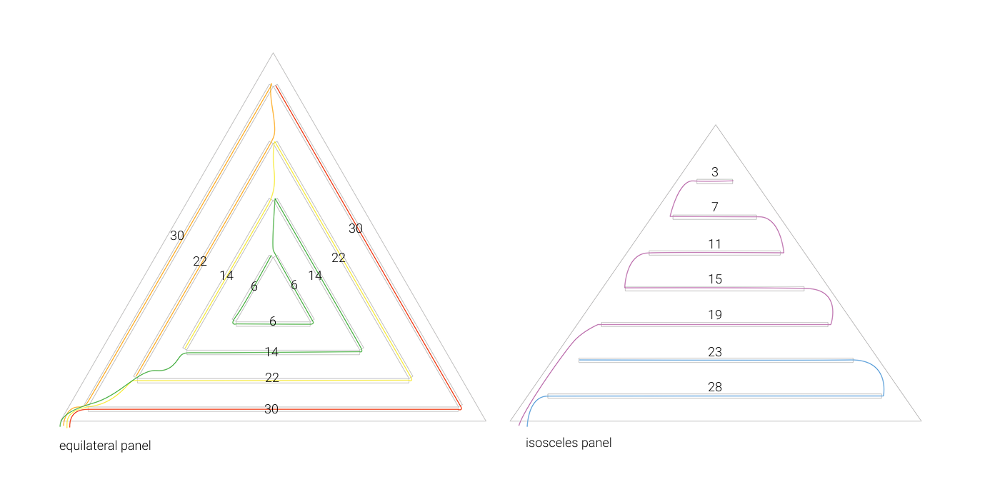

4378
LEDs
4.2m
diameter
£2700
material cost
30 days
initial build
6 hrs
installation time
When in Dome is a geodesic dome filled with lights that responds to the movement of people inside, providing a space for shared interaction.
This was largely a solo project, which I designed and built from start to finish, with some help from a few friends!
This was largely a solo project, which I designed and built from start to finish, with some help from a few friends!
Anyone inside the dome can turn a wave of the arm, tilt of the head or twirl of their whole body into a performance for others to watch. Movement is tracked by a Kinect camera sensor and the lights respond to movement in real time, using my own custom built software which detects and interprets movement in the space.
The software was written in Processing and the LEDs are driven using Fadecandy.
Making of
Physical dome build
I built the dome using injection moulded hubs made by BuildWithHubs and sawn timber struts which I cut to size and painted black. I also added 50cm tall legs to raise the lights off the ground for better visibility and aluminium flat bar cross brackets between each leg for stability.


Painting the geodesic dome struts
Attaching connectors to the struts
Geodesic dome
Planning the lights
I used SketchUp to plan the visual layout of the lights in 3D and created several options for the strip placements. The layout had to take into account aesthetics and also distribution of power and data. I used 11 Fadecandys and 11 power supplies to cover the 33 triangles of the dome.


3D model of the geodesic dome, created in Sketchup, to plan LED layout aesthetically
Planning the LED and cable layout on the triangle panels. Each Fadecandy can drive up to 8 strips of 64 pixels each, so the lines on the panels were divided over these strips
Flattened view of the surface of the dome, showing LED, power and Fadecandy layout. Each triangle, power supply and Fadecandy are numbered and this plan was used for each setup build.